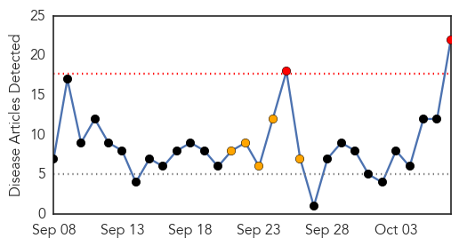
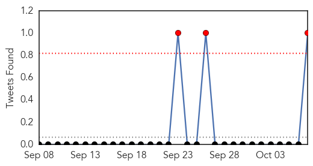
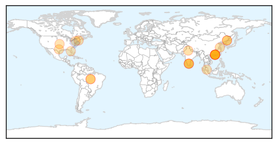
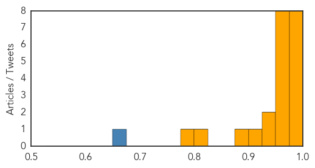

Toggle navigation
Early Warning
Daily Alerts
Dengue Fever
Oct 07, 2014
Compare to:
-
Hemmorhagic Fever
Mold/Fungal Infection
Influenza
Meningitis
Pertussis / Whooping Cough
Middle East Respiratory Syndrome
Cholera
Hepatitis
Chikungunya
Yellow Fever
Bubonic Plague
West Nile Virus
Swine Flu
Ebola
Measles
Unknown
Mumps
30 Day Trends
Web: 2
alerts
, 5
warnings
Twitter: 3
alerts
, 0
warnings
Top Articles:
1.000
News Scan for Oct 07, 2014
0.998
India dengue fever cases 300 times higher than officially reported - study
0.998
Dengue Fever Threatens China: Over 21,000 Cases Reported, 6 Killed in Worst Virus Outbreak in Decades
0.994
Dengue throws up scary count
0.994
Over 21,000 in Guangdong now infected with dengue fever
0.988
21,000 Infected In China, Worst Outbreak In Two Decades
0.981
Dengue kills six in 'worst China outbreak in decades'
0.980
Dengue in India: The billion-dollar disease
0.975
There are 6 million dengue cases in India annually, says study
0.974
China Battles Worst Dengue Fever Outbreak in 20 Years
0.973
Six Die in Southern China Dengue Outbreak
0.973
Number of Dengue Fever Cases in India 300 Times Higher Than Official Figures
0.966
6 die in dengue virus outbreak in southern China
0.965
Dengue outbreak in southern China leaves at least six dead
0.953
Death toll of dengue in south China hits 6
0.951
6 die in dengue virus outbreak in southern China
0.940
Number of dengue patients in Odisha touches 3000, Odisha Current News, Odisha Latest Headlines
0.928
6 die in dengue virus outbreak in southern China
0.907
6 die in dengue virus outbreak in southern China
0.878
Record number of dengue cases this year, says Subra - Nation
0.819
India has 6 mn unreported dengue cases: study
0.797
U.S. FDA Accepts IDE Submission by Cerus Making the INTERCEPT Blood System Available to Address Chikungunya and Dengue Blood Safety Risks
Top Tweets:
0.655
: Ebola updates; Dengue in China; MERS in Saudi Arabia. HealthSecurity
http://t.co/e3gokud8xb
Web/News Articles

Tweets

Article Locations

Article Confidences
